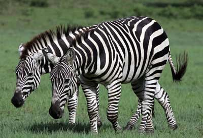

Why Zebras?
By now, you may have noticed that every page on the Landarian Labs' website features zebras. But look closer. You'll notice that every page features pairs of zebras. What is the significance of a pair of zebras?
The zebra is the icon of the Ehlers-Danlos Society. Somebody who is very special to David is affected by Ehlers-Danlos Syndrome. The pair of zebras is David's reminder to her that she will never be alone in the struggle. As such, Landarian Labs supports the work of the Ehlers-Danlos Society, which includes research into treatment and hopefully a cure. Quoted from the site:
People with the Ehlers-Danlos syndromes and hypermobile spectrum disorders (HSD) often identify themselves as zebras.
Medical students have been taught for decades that, “When you hear hoofbeats behind you, don’t expect to see a zebra.” In other words, look for the more common and usual, not the surprising, diagnosis.
But many of us spend years pursuing a diagnosis for disorders that aren’t well known. Or aren’t expected in someone who looks normal, or is too young to have so many problems, or too old. Or even, what we might have is considered too rare for anybody to be diagnosed with it.
So the zebra became our symbol to mean, “Sometimes when you hear hoofbeats, it really is a zebra.” Ehlers-Danlos syndromes are unexpected because they’re rare. Hypermobile spectrum disorders are common, but are unexpected because they remain misdiagnosed or under-diagnosed.
When you see a zebra, you know it’s a zebra—but no two zebras have identical stripes just as no two people with an Ehlers-Danlos syndrome or HSD are identical. We have different symptoms, different types, different experiences—and we are all working towards a time when a medical professional immediately recognizes someone with an Ehlers-Danlos syndrome or HSD.
A group of zebras is called a dazzle.
We are a community of individual zebras, we are stronger together, and we dazzle.
Source: https://www.ehlers-danlos.com/why-the-zebra/
Provided down below is a page from the EDS website that explains a bit about the syndrome: